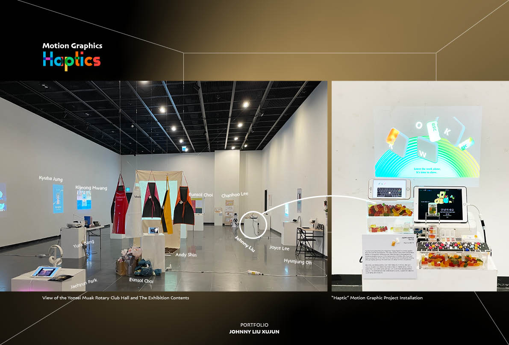
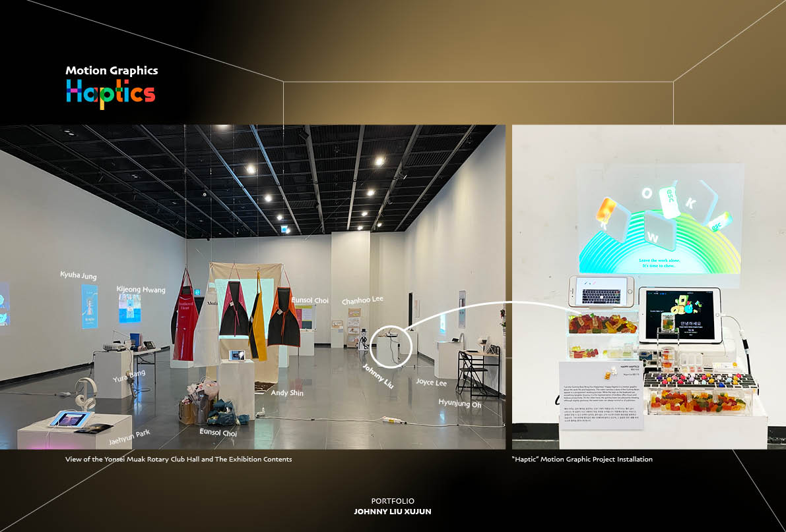

Technology as a double-edged sword, although highly celebrated by modernity, fastevolving digitalization also produces an almost equal amount of interruption to our life. One of the most apparent aspects of digitalization is the increase of screen-time, endless notification flows, further, some may have fallen the indulgence with apps and games. Tons of information has made available online, causing the delusion of “More is good,” meanwhile less inter-personal interaction is appreciated while typing on a small piece of glass is much more trendy, more and more people started to develop frequent anxiety and reoccurring stresses under the side effects of fast digitalization. To reflect on such a social phenomenon, “Happy Haptics” is an exhibitory motion graphic that is designed to refresh our emotions and memories toward worklife and joyfulness. The project narrates the story of the Gummy Bears, which is a small, soft candy that many people are familiar with. Not only the candy has delightful tastes but also when speaking of Gummy Bears, it is a metaphoric term about joy and happiness. The texture of the Gummy Bear is very chewy and sticky, therefore when it is already embedded within many’s memory, from images that one can infer its joyful tangibility. The keyboard, on the other hand often associated with productivity, which symbolically captures the essence of modern work life, where anxiety and stress are often originated.


 
